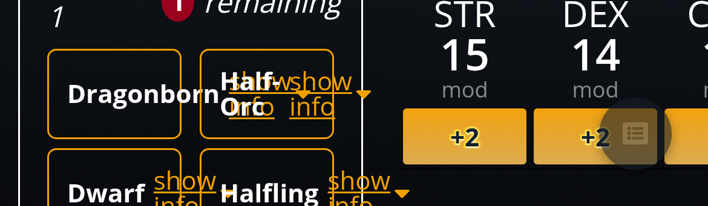
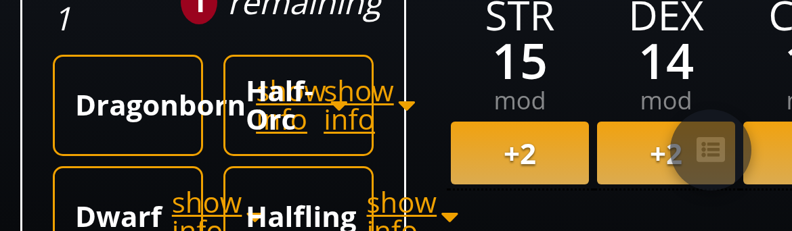

The builder on a 390px-wide phone, dark theme, shown at actual size. The buttons are 68×31 on phones and desktops alike; the larger labels keep that size by trimming the top and bottom padding.
Dark text, yellow rim (built)
14px · as built

15px · padding trimmed, still 68×3116px · padding trimmed, still 68×31
Default white
14px · as built

15px · padding trimmed, still 68×3116px · padding trimmed, still 68×31